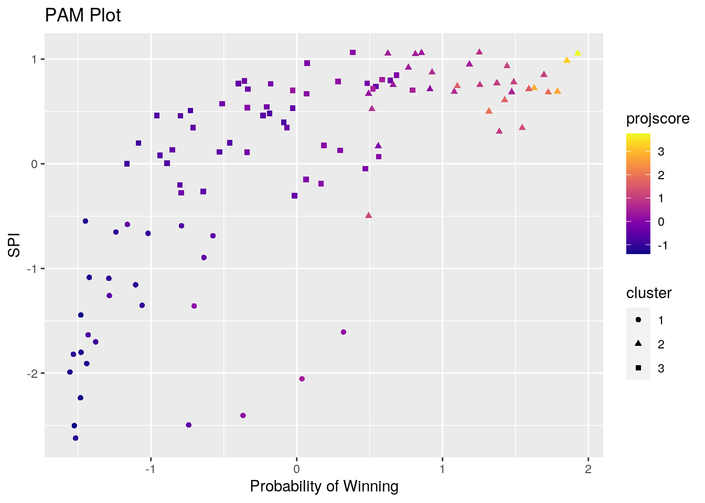

In this project, we will explore 2019 Women's World Cup statistics!
The datasets chosen were because of an appreciation for women's soccer. The first data set came from the package fivethirtyeight, called 'wwc_2019_matches' This dataset includes: date, team 1, team 2, soccer power index (spi) of team 1, spi of team 2, probability (prob) that team 1 will win the match, prob of team 2, prob that they tie, projected number of goals scored by team 1 (proj_score), proj_score2, score of team 1, score of team 2, Shot-based expected goals (xg) for team 1, xg for team 2, non-shot expected goals (nsxg) for team 1, nsxg for team 2, goals scored by team 1 accounting for the conditions under which each goal was scored (adj_score), and adj_score for team 2. I remember sitting down with my dad to watch several of these games and really enjoy the hard work and detication each team had.
The second dataset came from the website, FBref, that depicted "2019 Women's World Cup Scores & Fixtures." The data was piped into excel, and exported as a cvs file into R Studio. In Excel, I was able to take out unnecessary/ duplicate data. The dataset 'fb_ref' includes: date, time, game (team 1, team 2), team 1 score, team 2 score, attendance, venue, and referee. I chose this dataset not only because it had the common variable of date, but also because game would be a better common variable after mutating a new column in 'wwc_2019_matches.' It also had new data such as attendance, venue, and referee. FBref
library(tidyverse)
library(tidyr)
library(dplyr)
library(ggplot2)
library(scales)
library(viridis)
library(cluster)
library(plotly)
library(GGally)library("fivethirtyeight")
data("wwc_2019_matches")
head(wwc_2019_matches)## # A tibble: 6 x 18
## date team1 team2 spi1 spi2 prob1 prob2 probtie proj_score1
## <date> <chr> <chr> <dbl> <dbl> <dbl> <dbl> <dbl> <dbl>
## 1 2019-06-07 fran… sout… 95.3 80.8 0.694 0.114 0.192 1.9
## 2 2019-06-08 germ… china 94.2 82.1 0.599 0.176 0.224 1.67
## 3 2019-06-08 spain sout… 83.6 61.5 0.592 0.130 0.278 1.27
## 4 2019-06-08 norw… nige… 82.9 70.9 0.520 0.218 0.263 1.35
## 5 2019-06-09 aust… italy 93.1 71.1 0.742 0.114 0.143 2.63
## 6 2019-06-09 braz… jama… 89.1 59.8 0.803 0.0803 0.117 2.92
## # … with 9 more variables: proj_score2 <dbl>, score1 <dbl>, score2 <dbl>,
## # xg1 <dbl>, xg2 <dbl>, nsxg1 <dbl>, nsxg2 <dbl>, adj_score1 <dbl>,
## # adj_score2 <dbl>fb_ref <- read.csv("~/FBREF_WW_2019_Data.csv")
head(fb_ref)## date time game team.1.score team.2.score attendance
## 1 6/7/19 21:00 france-south_korea 4 0 45261
## 2 6/8/19 15:00 germany-china 1 0 15283
## 3 6/8/19 18:00 spain-south_africa 3 1 12044
## 4 6/8/19 21:00 norway-nigeria 3 0 11058
## 5 6/9/19 13:00 australia-italy 1 2 15380
## 6 6/9/19 15:30 brazil-jamaica 3 0 17668
## venue referee
## 1 Parc des Princes Claudia Umpierrez
## 2 Roazhon Park Marie-Soleil Beaudoin
## 3 Stade Oceane Maria Carvajal
## 4 Stade Auguste-Delaune II Kate Jacewicz
## 5 Stade du Hainaut Melissa Borjas
## 6 Stade des Alpes Riem HusseinBoth of my dataset were relatively tidy so I decided to untidy certain columns and then proceed to organize them to ensure they were tidy (as well as show the skill).
# this was used to make ww_2019_matches untidy
untidy_matches <- wwc_2019_matches %>% pivot_wider(names_from = "spi1",
values_from = "spi2")
# this was used to make fb_ref untidy
untidy_fbref <- fb_ref %>% pivot_wider(names_from = "attendance",
values_from = "game")Pivot_wider was used to make the tidy data sets untidy. On ww_2019_matches, I was able to take away the values from spi2 and placed them into the seperate spi1 columns that were created. On fb_ref, I was able to take away the values from attendance and placed them into the seperate date columns that were created.
matches1 <- untidy_matches %>% pivot_longer(cols = -(date:adj_score2),
names_to = "spi1")
matches2 <- na.omit(matches1)
names(matches2)[18] <- "spi2"
fb_ref1 <- untidy_fbref %>% pivot_longer(cols = -(date:referee),
names_to = "attendance")
fb_ref2 <- na.omit(fb_ref1)
names(fb_ref2)[8] <- "game"
fb_ref2[1] <- NULL
fb_ref2[2:3] <- list(NULL)
fb_ref2 %>% select("game", everything())## # A tibble: 52 x 5
## game time venue referee attendance
## <fct> <fct> <fct> <fct> <chr>
## 1 france-south_korea 21:00 Parc des Princes Claudia Umpierrez 45261
## 2 germany-china 15:00 Roazhon Park Marie-Soleil Beau… 15283
## 3 spain-south_africa 18:00 Stade Oceane Maria Carvajal 12044
## 4 norway-nigeria 21:00 Stade Auguste-Delau… Kate Jacewicz 11058
## 5 australia-italy 13:00 Stade du Hainaut Melissa Borjas 15380
## 6 brazil-jamaica 15:30 Stade des Alpes Riem Hussein 17668
## 7 england-scotland 18:00 Stade de Nice Jana Adamkova 13188
## 8 argentina-japan 18:00 Parc des Princes Stephanie Frappart 25055
## 9 canada-cameroon 21:00 Stade de la Mosson Ri Hyang Ok 10710
## 10 new_zealand-netherl… 15:00 Stade Oceane Edina Alves Batis… 10654
## # … with 42 more rows# before joining, I wanted to make a new column in matches2
# called 'games' which combined the two teams into a new
# column to make a better common variable other than 'date'
matches_real <- (matches2 %>% mutate(game = paste(team1, team2,
sep = "-"))) %>% select("date", "game", everything())I was able to tidy up both of the datasets using pivot_longer. I was able to get 'matches1' now 'matches2' back to how it was before tidying. With the dataset 'fb_ref1' now 'fb_ref2,' I was able to tidy it back up using pivot_longer and get rid of the unnecessary columns such as dat and both of the team scores since that data is already in 'matches2.' With this dataset, I was then able to mutate a new column called 'game' in order to be able to use that as my common variable.
When joining the datasets, I ran a full join. This was because both datasets had the same 52 games and I thought it would be the most efficient way to see all the data together. At this point each dataset has distinct variables from each other, and I was not sure what to remove or keep later on. I ran a full join the datasets by 'game.'
fulldata <- full_join(matches_real, fb_ref2, by = "game")I decided to narrow down my fully joined data to just my desired variables that I was most interested in. Before separating my joined dataset again, I wanted to creat a new variable of the spread of the game. I then decided to make two separate datasets for each team keeping the variables: game, team, prob, proj_score, spi, attendance, and spread. By creating two datasets, renaming the columns to the same thing, and then full joining again by game, I would then be able to wrangle the data by country and game. Potential problems with doing this are that both the shot-based expected goals and non-shot-based expected goals could have provided more data behind each team and their preformance.
# Mutating a varable that is dependent on another variable
fulldata1 <- fulldata %>% mutate(spread = abs(score1 - score2))
# Summarizing my data once more with new variable, taking out
# unnecessary columns
fulldata2 <- fulldata1 %>% mutate(spi2 = as.character(spi2))
fulldata2[1] <- NULL
fulldata2[6] <- (NULL)
fulldata2[10:15] <- list(NULL)
fulldata2[12:14] <- list(NULL)
Team1 <- fulldata2[, c("game", "team1", "prob1", "proj_score1",
"score1", "spi1", "attendance", "spread")]
names(Team1)[2] <- "country"
names(Team1)[3] <- "prob"
names(Team1)[4] <- "projscore"
names(Team1)[5] <- "score"
names(Team1)[6] <- "spi"
Team2 <- fulldata2[, c("game", "team2", "prob2", "proj_score2",
"score2", "spi2", "attendance", "spread")]
names(Team2)[2] <- "country"
names(Team2)[3] <- "prob"
names(Team2)[4] <- "projscore"
names(Team2)[5] <- "score"
names(Team2)[6] <- "spi"
# Joined the two team datasets together
joined <- full_join(Team1, Team2, by = c(game = "game", country = "country",
prob = "prob", projscore = "projscore", score = "score",
spi = "spi", attendance = "attendance", spread = "spread")) %>%
arrange(country) %>% mutate(attendance = as.numeric(attendance)) %>%
mutate(spi = as.numeric(spi))
glimpse(joined)## Rows: 104
## Columns: 8
## $ game <chr> "argentina-japan", "england-argentina", "scotland-argentin…
## $ country <chr> "argentina", "argentina", "argentina", "australia", "austr…
## $ prob <dbl> 0.0161, 0.0136, 0.2312, 0.7425, 0.4290, 0.8889, 0.6574, 0.…
## $ projscore <dbl> 0.38, 0.20, 0.90, 2.63, 1.55, 3.65, 1.74, 2.92, 1.37, 1.94…
## $ score <dbl> 0, 0, 3, 1, 3, 4, 1, 3, 2, 1, 1, 2, 0, 1, 0, 1, 2, 1, 0, 0…
## $ spi <dbl> 37.09, 39.07, 39.19, 93.13, 92.44, 92.82, 92.49, 89.12, 89…
## $ attendance <dbl> 25055, 20294, 14319, 15380, 17032, 17402, 19045, 17668, 17…
## $ spread <dbl> 0, 1, 0, 1, 1, 3, 0, 3, 1, 1, 1, 1, 1, 2, 3, 1, 2, 1, 1, 2…# Finding Mean Projected Score by Country
joined %>% group_by(country) %>% summarize_at(vars(projscore),
list(spi.mean = mean)) %>% arrange(desc(spi.mean))## # A tibble: 24 x 2
## country spi.mean
## <chr> <dbl>
## 1 usa 2.41
## 2 australia 2.39
## 3 japan 2.12
## 4 germany 1.76
## 5 france 1.76
## 6 england 1.75
## 7 brazil 1.74
## 8 netherlands 1.56
## 9 canada 1.4
## 10 italy 1.24
## # … with 14 more rowsI first wanted to see the mean soccer power index for each country in the tournament and arrange them from highest to lowest SPI.
# Mean, SD, Min, Max with no grouping
joined %>% select(-game, -country) %>% summarize_if(is.numeric,
c(mean = mean, sd = sd, min = min, max = max, median = median)) %>%
pivot_longer(1:30, names_to = "Var", values_to = "Value") %>%
separate(Var, into = c("Var", "Stat"))## # A tibble: 30 x 3
## Var Stat Value
## <chr> <chr> <dbl>
## 1 prob mean 0.437
## 2 projscore mean 1.34
## 3 score mean 1.40
## 4 spi mean 80.8
## 5 attendance mean 21884.
## 6 spread mean 1.88
## 7 prob sd 0.278
## 8 projscore sd 0.819
## 9 score sd 1.67
## 10 spi sd 16.7
## # … with 20 more rowsI was then able to take the mean, standard deviation, minimun, maximun, and median of each numeric variable in my dataset with no grouping.
# Grouped by Country
joined %>% group_by(country) %>% summarize_if(is.numeric, c(mean = mean,
sd = sd)) %>% pivot_longer(-country) %>% separate(name, into = c("var",
"stat")) %>% pivot_wider(names_from = "country", values_from = "value")## # A tibble: 12 x 26
## var stat argentina australia brazil cameroon canada chile china
## <chr> <chr> <dbl> <dbl> <dbl> <dbl> <dbl> <dbl> <dbl>
## 1 prob mean 8.70e-2 0.679 4.90e-1 1.34e-1 5.71e-1 1.63e-1 4.07e-1
## 2 proj… mean 4.93e-1 2.39 1.74e+0 5.45e-1 1.40e+0 7.50e-1 1.05e+0
## 3 score mean 1.00e+0 2.25 1.75e+0 7.50e-1 1.00e+0 6.67e-1 2.50e-1
## 4 spi mean 3.84e+1 92.7 8.94e+1 6.52e+1 9.27e+1 4.77e+1 8.17e+1
## 5 atte… mean 1.99e+4 17215. 2.00e+4 1.53e+4 2.07e+4 2.50e+4 1.71e+4
## 6 spre… mean 3.33e-1 1.25 1.50e+0 1.75e+0 1.25e+0 2.33e+0 1.00e+0
## 7 prob sd 1.25e-1 0.192 2.54e-1 9.62e-2 1.43e-1 2.46e-1 2.06e-1
## 8 proj… sd 3.64e-1 0.961 9.33e-1 2.69e-1 3.90e-1 8.14e-1 2.79e-1
## 9 score sd 1.73e+0 1.5 9.57e-1 9.57e-1 8.16e-1 1.15e+0 5.00e-1
## 10 spi sd 1.18e+0 0.321 2.53e-1 3.37e+0 7.32e-1 1.22e+0 1.16e+0
## 11 atte… sd 5.38e+3 1504. 3.23e+3 7.03e+3 1.21e+4 1.79e+4 2.20e+3
## 12 spre… sd 5.77e-1 1.26 1.00e+0 9.57e-1 5.00e-1 5.77e-1 8.16e-1
## # … with 17 more variables: england <dbl>, france <dbl>, germany <dbl>,
## # italy <dbl>, jamaica <dbl>, japan <dbl>, netherlands <dbl>,
## # new_zealand <dbl>, nigeria <dbl>, norway <dbl>, scotland <dbl>,
## # south_africa <dbl>, south_korea <dbl>, spain <dbl>, sweden <dbl>,
## # thailand <dbl>, usa <dbl>I then found the mean and standard deviation of each country (by grouping) and was able to see each country and their stats going across the table. I think this was one of the most useful summarizing techniques because one is clearly able to see the mean and standard deviation for each variable across country tht played in the tournament.
# Grouped by Game
joined %>% select(-prob) %>% group_by(game) %>% summarize_if(is.numeric,
c(mean = mean, sd = sd)) %>% pivot_longer(-game) %>% separate(name,
into = c("var", "stat")) %>% pivot_wider(names_from = "game",
values_from = "value")## # A tibble: 10 x 54
## var stat `argentina-japa… `australia-braz… `australia-ital…
## <chr> <chr> <dbl> <dbl> <dbl>
## 1 proj… mean 1.98 1.46 1.79
## 2 score mean 0 2.5 1.5
## 3 spi mean 64.7 91.1 82.1
## 4 atte… mean 25055 17032 15380
## 5 spre… mean 0 1 1
## 6 proj… sd 2.26 0.127 1.19
## 7 score sd 0 0.707 0.707
## 8 spi sd 39.0 1.94 15.6
## 9 atte… sd 0 0 0
## 10 spre… sd 0 0 0
## # … with 49 more variables: `brazil-jamaica` <dbl>,
## # `cameroon-new_zealand` <dbl>, `canada-cameroon` <dbl>,
## # `canada-new_zealand` <dbl>, `chile-sweden` <dbl>, `china-spain` <dbl>,
## # `england-argentina` <dbl>, `england-cameroon` <dbl>,
## # `england-scotland` <dbl>, `england-sweden` <dbl>, `england-usa` <dbl>,
## # `france-brazil` <dbl>, `france-norway` <dbl>, `france-south_korea` <dbl>,
## # `france-usa` <dbl>, `germany-china` <dbl>, `germany-nigeria` <dbl>,
## # `germany-spain` <dbl>, `germany-sweden` <dbl>, `italy-brazil` <dbl>,
## # `italy-china` <dbl>, `italy-netherlands` <dbl>, `jamaica-australia` <dbl>,
## # `jamaica-italy` <dbl>, `japan-england` <dbl>, `japan-scotland` <dbl>,
## # `netherlands-cameroon` <dbl>, `netherlands-canada` <dbl>,
## # `netherlands-japan` <dbl>, `netherlands-sweden` <dbl>,
## # `new_zealand-netherlands` <dbl>, `nigeria-france` <dbl>,
## # `nigeria-south_korea` <dbl>, `norway-australia` <dbl>,
## # `norway-england` <dbl>, `norway-nigeria` <dbl>, `scotland-argentina` <dbl>,
## # `south_africa-china` <dbl>, `south_africa-germany` <dbl>,
## # `south_korea-norway` <dbl>, `spain-south_africa` <dbl>, `spain-usa` <dbl>,
## # `sweden-canada` <dbl>, `sweden-thailand` <dbl>, `sweden-usa` <dbl>,
## # `thailand-chile` <dbl>, `usa-chile` <dbl>, `usa-netherlands` <dbl>,
## # `usa-thailand` <dbl>I then found the mean and standard deviation of each game (by grouping) and was able to see each game and their stats going across the table. I took out the variable probability of wining because this was grouped by game and not country.
# Min and Max Attendance
distinct1 <- joined %>% distinct(game, .keep_all = T)
distinct1 %>% top_n(1, attendance) %>% select(game, attendance)## # A tibble: 1 x 2
## game attendance
## <chr> <dbl>
## 1 usa-netherlands 57900distinct1 %>% top_n(-1, attendance) %>% select(game, attendance)## # A tibble: 1 x 2
## game attendance
## <chr> <dbl>
## 1 cameroon-new_zealand 8009Here I just wanted to see the highest and lowest attending game. Max being USA vs Netherlands with 57,900 people, and the min being the Cameroon vs New Zealand with 8,009 people.
# Min and Max SPI
distinct1 %>% top_n(1, spi) %>% select(country, spi)## # A tibble: 1 x 2
## country spi
## <chr> <dbl>
## 1 france 96.8distinct1 %>% top_n(-1, spi) %>% select(country, spi)## # A tibble: 1 x 2
## country spi
## <chr> <dbl>
## 1 argentina 37.1Here I was able to see that France had the max SPI of 96.79 and Argentina had the min SPI of 37.09.
# Group by Country and Game
joined %>% group_by(game, country) %>% summarize(med.spi = median(spi))## # A tibble: 104 x 3
## # Groups: game [52]
## game country med.spi
## <chr> <chr> <dbl>
## 1 argentina-japan argentina 37.1
## 2 argentina-japan japan 92.3
## 3 australia-brazil australia 92.4
## 4 australia-brazil brazil 89.7
## 5 australia-italy australia 93.1
## 6 australia-italy italy 71.1
## 7 brazil-jamaica brazil 89.1
## 8 brazil-jamaica jamaica 59.8
## 9 cameroon-new_zealand cameroon 65.8
## 10 cameroon-new_zealand new_zealand 77.6
## # … with 94 more rowsHere I wanted to see the median spi by grouping by country and game. In the game for Argentina and Japan, Argentina had a median SPI of 37.09 and Japan 92.29... the rest is presented in the table.
# Grouped by by Attendance greater than 19000
joined %>% filter(attendance >= 19000) %>% summarize(mean.spread = mean(spread),
max.score = max(score), min.score = min(score), max.projscore = max(projscore),
min.projscore = min(projscore))## # A tibble: 1 x 5
## mean.spread max.score min.score max.projscore min.projscore
## <dbl> <dbl> <dbl> <dbl> <dbl>
## 1 1.44 4 0 4.42 0.2As a start to see if attendance was related to score/projected score, I wanted to see the mean spread of the score, and the max and min for score and projected score for games where the attendance was greater than 19,000 people. I found that the most attended games only had a max score of 4, max projected score of 4.42, min score of 0, and min projected score of 0.2.
# Correlation
joined[, 3:7] %>% cor()## prob projscore score spi attendance
## prob 1.00000000 0.88722402 0.55072551 0.7023188 0.07959813
## projscore 0.88722402 1.00000000 0.60767909 0.5456365 0.01602165
## score 0.55072551 0.60767909 1.00000000 0.2830260 -0.06093639
## spi 0.70231878 0.54563651 0.28302599 1.0000000 0.33500657
## attendance 0.07959813 0.01602165 -0.06093639 0.3350066 1.00000000Finally I ran a correlation matrix based on all the numeric value in my dataset to start looking at the different correlations in my data, with the biggest correlaton being between probablity of winning and projected score.
# Making a Correlation heat map
cormat <- joined %>% select_if(is.numeric) %>% cor(use = "pair")
soccercor <- cormat %>% as.data.frame %>% rownames_to_column("var1") %>%
pivot_longer(-1, names_to = "var2", values_to = "correlation")
soccercor %>% ggplot(aes(var1, var2, fill = correlation)) + geom_tile(color = "grey") +
scale_fill_gradient2(low = "blue", mid = "lightblue", high = "yellow",
midpoint = 0, limit = c(-1, 1), space = "Lab", name = "Correlation") +
theme_minimal() + geom_text(aes(label = round(correlation,
2)), color = "black", size = 3) + theme(axis.text.x = element_text(angle = 45,
vjust = 1, size = 9, hjust = 1)) + coord_fixed()In the correlation heat map, one is able to visually see the different correlations with the various numeric variables in the data. There was a negative correlation between spread and spi, and a strong correlation bewteen projected score and probability of winning.
# Visualizing Mean SPI Across Country
ggplot(joined, aes(x = reorder(country, spi), y = spi)) + geom_point(stat = "summary",
fun = mean, col = "#14B4CB", size = 3) + geom_segment(aes(x = country,
xend = country, y = min(spi), yend = max(spi)), linetype = "dashed",
size = 0.1) + labs(title = "Dot Plot", subtitle = "Country Vs Avg. SPI") +
coord_flip() + xlab("Average SPI") + ylab("Country") + theme(panel.background = element_rect(fill = "#FFD46C",
colour = "#FFD46C", size = 0.5, linetype = "solid"), panel.grid.major = element_line(size = 0.5,
linetype = "solid", colour = "darkgray"), panel.grid.minor = element_line(size = 0.25,
linetype = "solid", colour = "darkgray"))In this first graph, I wasnted to display the average mean soccer power index across each country. I arranged them in order from least to highest and was able to see that the winners, Team USA, had the highest SPI throughout the entire tournament. Argentina had the lowest SPI.
# Visualizing Scores vs Projected Scores Across Country
sumscore <- joined %>% group_by(country) %>% summarise(score = sum(score))
sumproj <- joined %>% group_by(country) %>% summarise(projscore = sum(projscore))
sumjoin <- full_join(sumscore, sumproj, by = "country")
sumjoin1 <- sumjoin %>% pivot_longer(cols = c("score", "projscore"),
names_to = "variable", values_to = "score")
ggplot(sumjoin1, aes(x = country, y = score, fill = variable)) +
geom_bar(stat = "identity", position = "dodge") + theme(axis.text.x = element_text(angle = 90,
vjust = 0.5, hjust = 1)) + ggtitle("Total Projected Scores vs Actual Scores Across Country") +
xlab("Country") + ylab("Projected Score vs Score") + scale_fill_manual("Different Scores",
values = c("#0744C4", "#FFD429")) + theme(panel.background = element_rect(fill = "#DEFFA9",
colour = "#DEFFA9", size = 0.5, linetype = "solid"), panel.grid.major = element_line(size = 0.5,
linetype = "solid", colour = "darkgray"), panel.grid.minor = element_line(size = 0.25,
linetype = "solid", colour = "darkgray"))In this second graph I wanted to visually see if the total projected score (points) for each country was close to to the total points they actually scored in each game of the tournament. After adding the total projected points and actual points scored, I visually showed it in a bar plot. There were countries that did better, about projected, and less than projected across the board.
# Visualizing Mean Attendance Across Projected Scores
ggplot(joined, aes(x = reorder(game, projscore), y = attendance)) +
geom_point(aes(color = projscore)) + geom_point(stat = "summary",
fun.y = mean, size = 0.7, shape = "circle", aes(color = projscore)) +
scale_y_continuous(name = "Attendance") + ggtitle("Attendance Across Projected Scores") +
xlab("Game") + theme(axis.text.x = element_text(angle = 90,
vjust = 0.5, hjust = 1)) + scale_color_viridis(option = "plasma") +
theme(panel.background = element_rect(fill = "#C1F7FF", colour = "#C1F7FF",
size = 0.5, linetype = "solid"), panel.grid.major = element_line(size = 0.5,
linetype = "solid", colour = "darkgray"), panel.grid.minor = element_line(size = 0.25,
linetype = "solid", colour = "darkgray"))In the final graph I wanted to visually see if there was any correlation between the attendance at each game and the mean projected score for each game. I odered the games by increasing projected score. I found that there was no real correlation between a game with a higher score projected and the people that attended. The game with the highest attendance was not the highed projected scoring game.
pam_dat <- joined %>% dplyr::select_if(is.numeric)
wwc_width <- vector() #created an empty vector
for (i in 2:10) {
pam_fit <- pam(pam_dat, k = i)
wwc_width[i] <- pam_fit$silinfo$avg.width
}
ggplot() + geom_line(aes(x = 1:10, y = wwc_width)) + scale_x_continuous(name = "k",
breaks = 1:10) #first plot to show clusters wwcpam1 <- pam_dat %>% pam(k = 3)
plot(wwcpam1, which = 2) #plot to show the values final <- joined %>% select(-game, -country) %>% scale %>% as.data.frame
pam2 <- final %>% pam(3)After running the silhouette widths, indexes how cohesive and separated clusters are simultaneously, I was able to determine my data most likely has 3 clusters. Using this, I was then able to make different visualizations using the 3 cluster model. All of the three peaks has a silhouette widths within the reasonable structure range, (0.56, 0.68, and 0.63). This further confirmed that it would be best to use three clusters.
final <- final %>% mutate(cluster = as.factor(pam2$clustering))
ggplot(final, aes(x = prob, y = spi, color = projscore, shape = cluster)) +
geom_point() + scale_color_viridis(option = "plasma") + ggtitle("PAM Plot") +
xlab("Probability of Winning") + ylab("SPI")
final %>% plot_ly(x = ~prob, y = ~projscore, z = ~spi, color = ~cluster,
type = "scatter3d", mode = "markers")ggpairs(final, aes(color = cluster))There are three clusters shown in the first three graphs. The PAM plot visualizes the relationship between SPI, probability of winning, and projected score. The three clusters are also visibily seen through the different shapes. The plotly graph allows you to see the third variable (projected score) on the graphical scale, instead of the color of the plots themselves. This then gives a different way to view the data. From this data I concluded that as the probability of winning a game increases, it is positively correlated with SPI along with the projected score (also increasing). Therefore, a stong soccer power index will be positively correlated with the projected score of the game and the probability of winning.
The End.